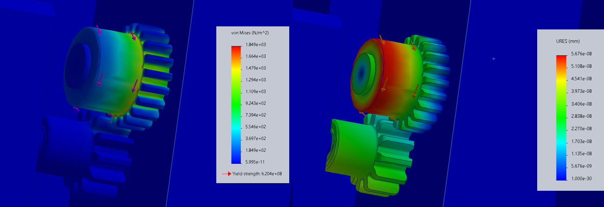
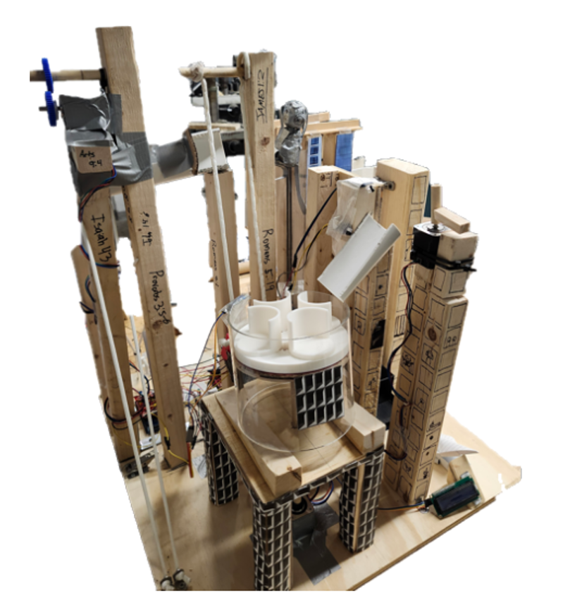
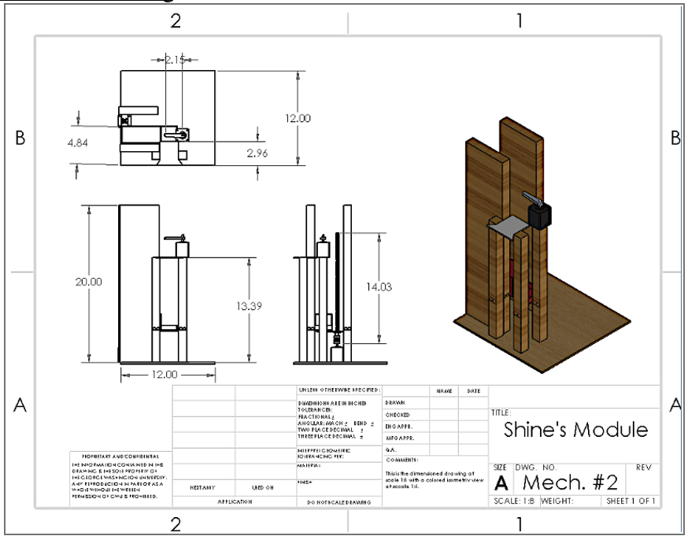
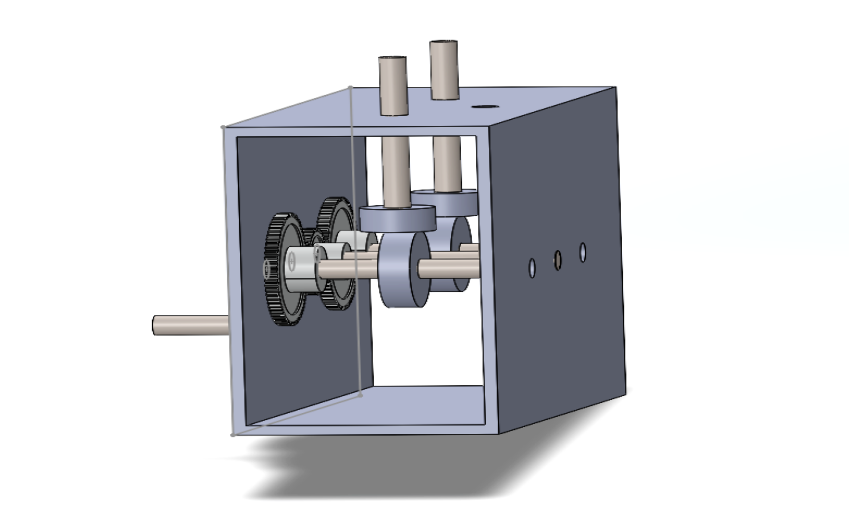
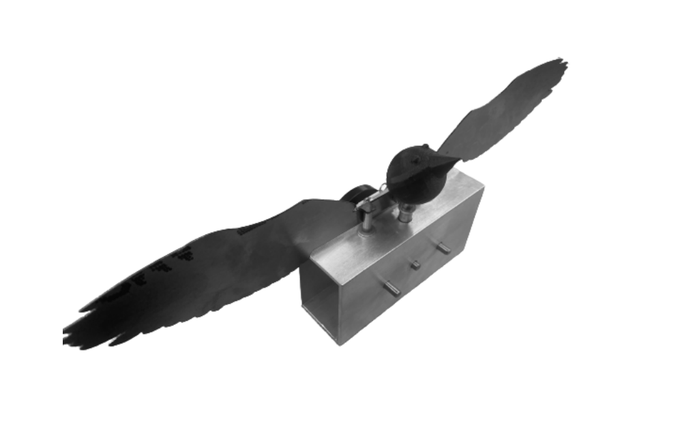
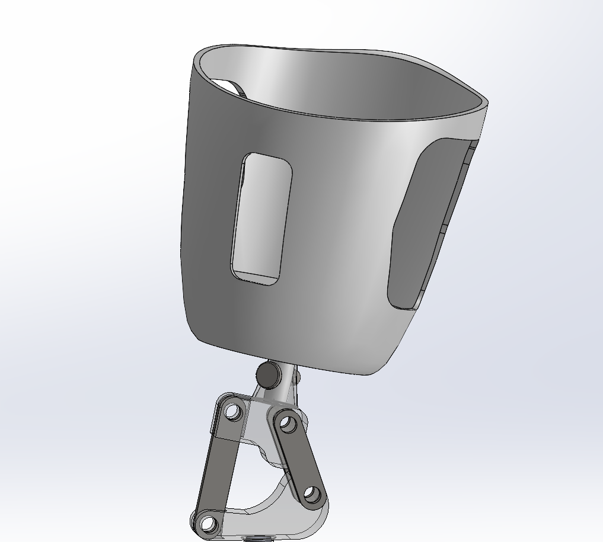

4th year BS Mechanical Engineering student at GWU with a concentration in Robotics. Building autonomous drones, robotic dogs, and mechatronic systems. Passionate about UAVs, autonomous navigation, and the future of mobility.
Designing and building two agricultural drones from scratch that autonomously navigate a field without collision. Architected a distributed swarm coordination system using mesh networking and consensus-based control, integrating CubePilot Orange autopilot with GPS/IMU sensors and Mission Planner for 3D environment mapping and stable flight.
Transforming a Mini Pupper 2 quadruped robot into a search-and-rescue scout. Equipped with LiDAR for environment sensing, the robot navigates dimly lit rooms autonomously to locate objects — combining SLAM navigation, low-light perception, and legged locomotion control.
One of 8 teams (4 members each) tasked with building a subsystem to autonomously move a golf ball through 40 linked mechanisms — 5 seconds per handoff — in a continuous loop. Designed and fabricated the mechanism using SolidWorks CAD, performed FEA, and coded the Arduino control logic.



Full teardown and reverse engineering of a professional fishing reel. Analyzed design intent, customer needs, and performance characteristics. Developed complete CAD models, ran FEA, and proposed targeted engineering improvements.
Fully mechanical bird with functional flapping wings and a rotating head. Powered by a crank-driven gear system, designed in SolidWorks, and fabricated using laser cutting, 3D printing, and milling.


Designed a functional above-knee prosthetic for a 6-foot male patient as part of Advanced Mechanical Engineering Design. The goal was to produce a manufacturable, real-world-viable device — not a theoretical exercise. Material selection prioritized structural adequacy, biocompatibility, weight, and cost, mirroring constraints an actual prosthetist would face. The socket geometry accommodates residual limb loading, while the lower linkage provides controlled knee flexion and stability under gait forces. FEA validated structural integrity under expected static and dynamic loading conditions.

Applied machine learning to predict Formula 1 race winners from qualification times and historical results. Separately built sports data visualizations in Python, exploring intersections of engineering analysis and athletic performance data.
Open to opportunities in robotics, autonomous systems, and automotive engineering.